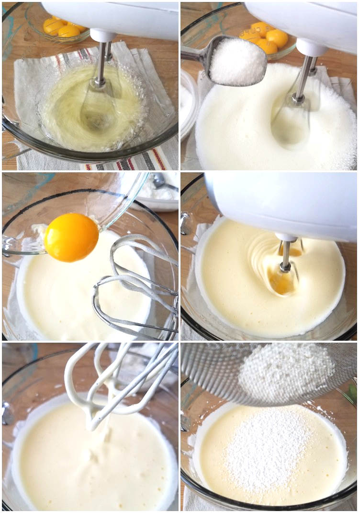

Pastel de Tres Leches
Ingredientes:
- 1 taza de harina
- 1 1/2 cucharadita de polvo para hornear
- 4 huevos
- 1 taza de azúcar
- 1/3 taza de leche
- 1 lata de leche condensada
- 1 lata de leche evaporada
- 1 taza de crema para batir
- 1 cucharadita de extracto de vainilla
Procedimiento:
Se baten los huevos con el azúcar hasta obtener una mezcla esponjosa. Se agregan la harina y el polvo para hornear tamizados, alternando con la leche. Se hornea a 180 grados centígrados por 25-30 minutos. Una vez frío, se perfora el pastel y se vierte la mezcla de las tres leches (leche condensada, evaporada y crema para batir con vainilla). Refrigerar por al menos 4 horas antes de servir.
